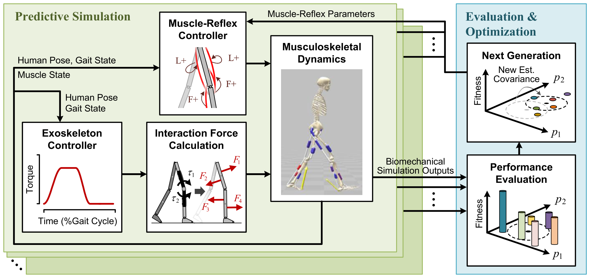

Biomechanical Evaluation of Human Walking Assisted by Different Knee Exoskeleton Configuration: A Predictive Simulation
Multibody System Dynamics, 2026
Compared the biomechanical effects of multiple knee exoskeleton configurations using predictive simulation, highlighting how actuator placement and interaction geometry influence assistance effectiveness across terrains.